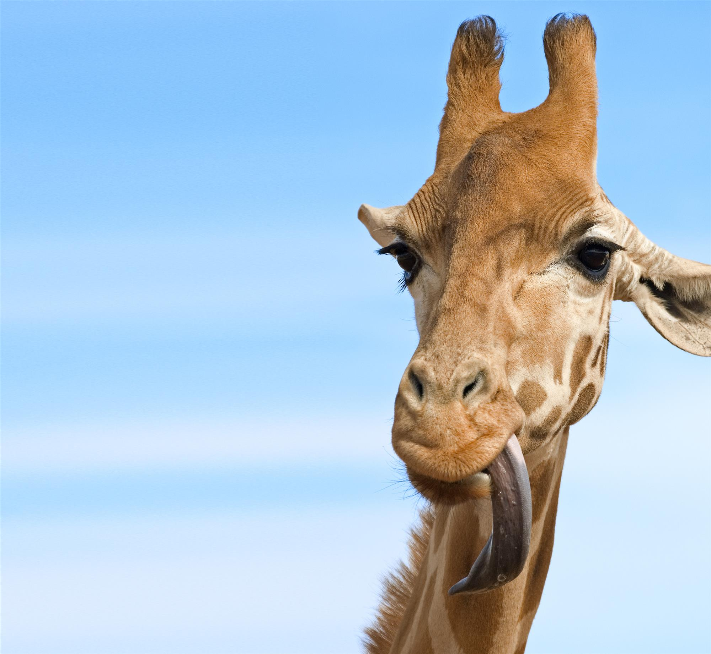
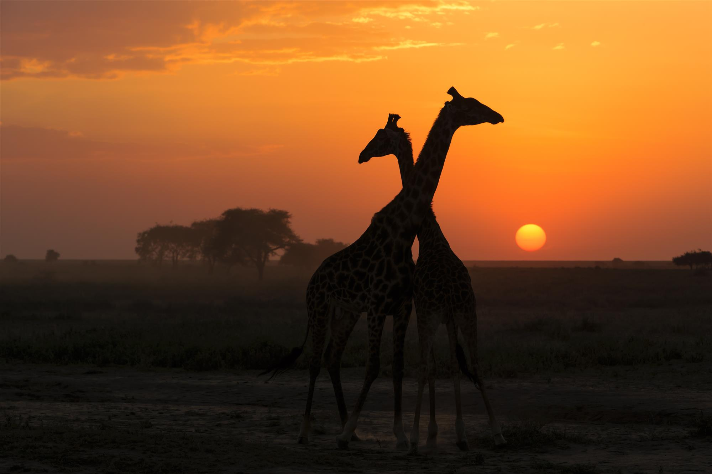
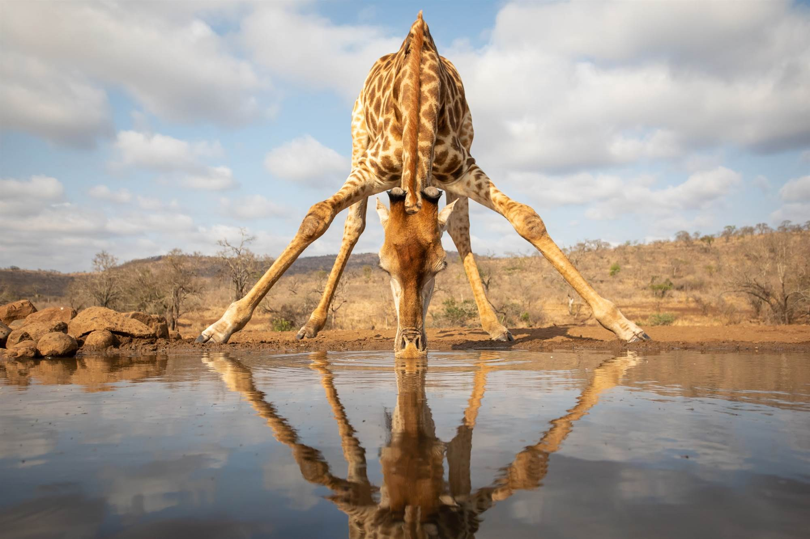

¿Cuánto sabes sobre las jirafas?
Estos mamíferos son únicos y no solo por su descomunal altura y belleza: beben despatarrados, tienen la lengua negra, duermen de pie y muchas otras cosas más que descubrirás en este test...
-

1/3
¿Sabes por qué las jirafas tiene la lengua de color morado o negro?-
Esto se debe a que sus tejidos tienen un alto contenido en melanina. La jirafa saca la lengua continuamente para comer y durante mucho tiempo para esquivar las espinas de las ramas de las acacias, este color de su lengua le protege de los rayos del sol.
-

2/3
¿Sabes cuantas vértebras cervicales tienen las jirafas?-
Te parecerá un poco extraño, pero las jirafas tienen exactamente las mismas vértebras cervicales que nosotros, 7. Eso sí, las suyas son mucho más grandes y alargadas que las de los humanos, de ahí que tengan el cuello tan largo.
-

3/3
¿Por qué las jirafas han de abrir mucho sus patas delanteras para beber agua?-
Esta curiosa forma de beber agua tiene una explicación fisiológica muy sencilla. Al agacharse la cabeza y el corazón quedan más o menos a la misma altura y así evitan posibles mareos. Las jirafas son unos animales realmente curiosos y de los que se siguen descubriendo cosas. De hecho, las últimas investigaciones genéticas han demostrado que existen cuatro especies distintas de jirafas y cinco subespecies que viven en diferentes áreas geográficas de África.